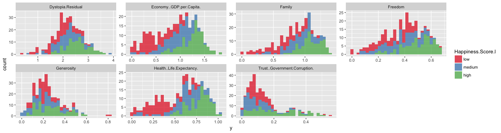
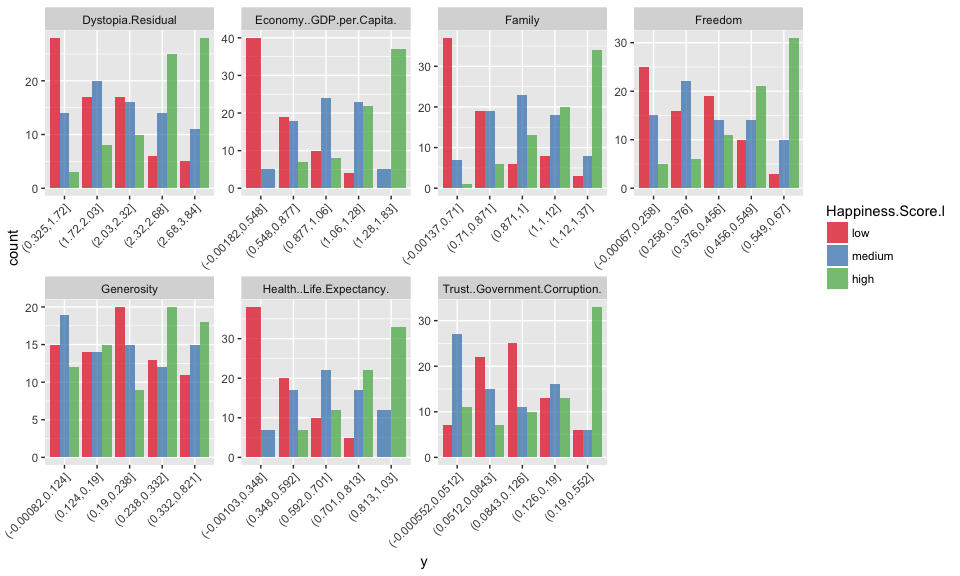
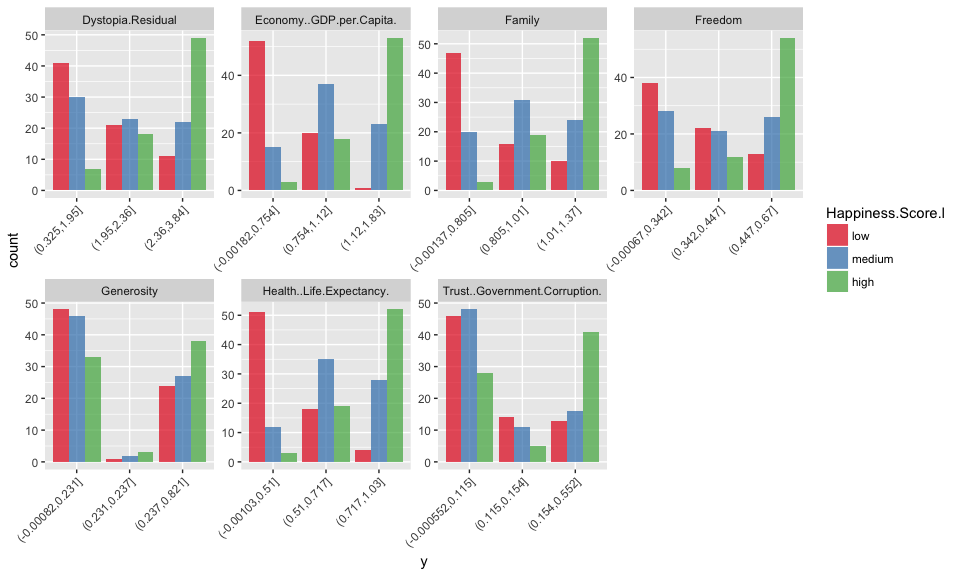
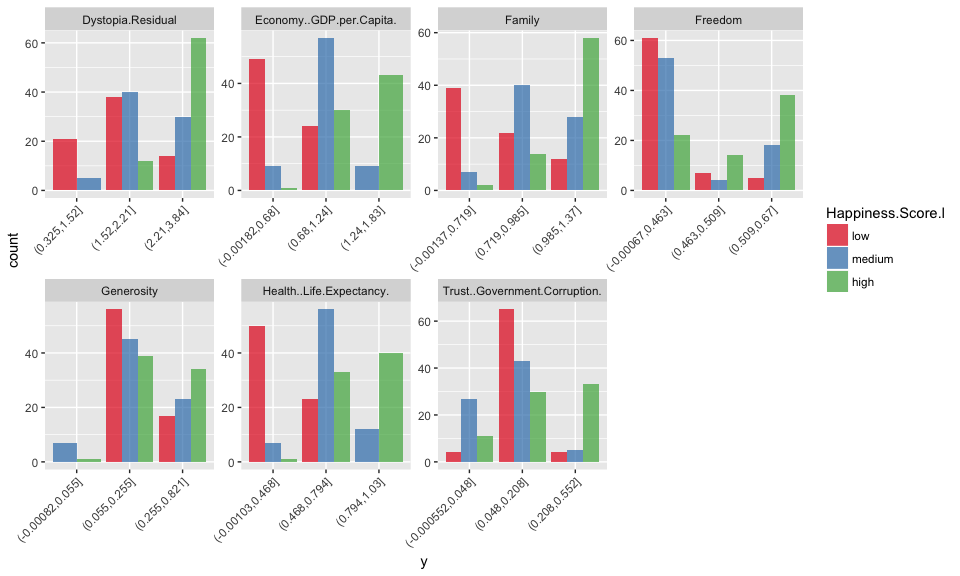
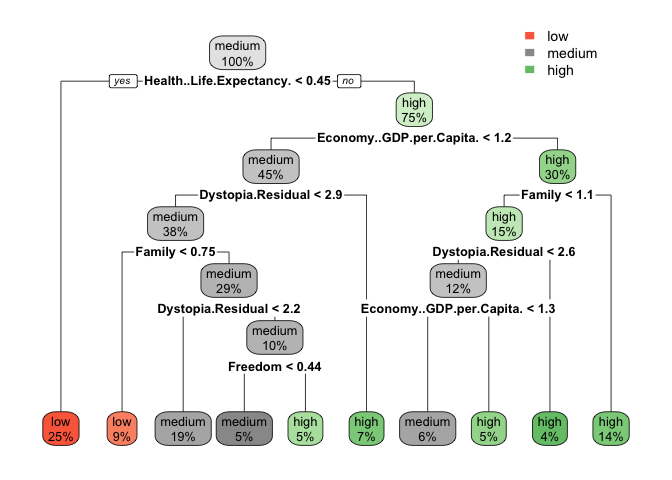
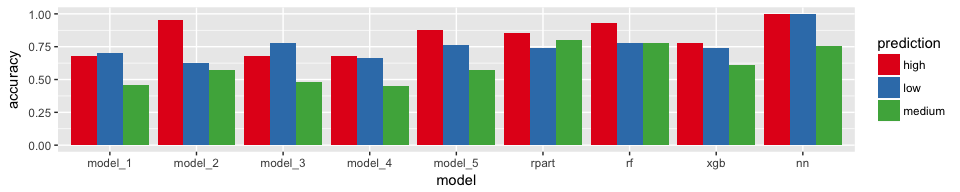

This week, I am exploring Holger K. von Jouanne-Diedrich’s OneR package for machine learning. I am running an example analysis on world happiness data and compare the results with other machine learning models (decision trees, random forest, gradient boosting trees and neural nets).
Conclusions
All in all, based on this example, I would confirm that OneR models do indeed produce sufficiently accurate models for setting a good baseline. OneR was definitely faster than random forest, gradient boosting and neural nets. However, the latter were more complex models and included cross-validation.
If you prefer an easy to understand model that is very simple, OneR is a very good way to go. You could also use it as a starting point for developing more complex models with improved accuracy.
When looking at feature importance across models, the feature OneR chose - Economy/GDP per capita - was confirmed by random forest, gradient boosting trees and neural networks as being the most important feature. This is in itself an interesting conclusion! Of course, this correlation does not tell us that there is a direct causal relationship between money and happiness, but we can say that a country’s economy is the best individual predictor for how happy people tend to be.
OneR
OneR has been developed for the purpose of creating machine learning models that are easy to interpret and understand, while still being as accurate as possible. It is based on the one rule classification algorithm from Holte (1993), which is basically a decision tree cut at the first level.
While the original algorithm has difficulties in handling missing values and numeric data, the package provides enhanced functionality to handle those cases better, e.g. introducing a separate class for NA values and the optbin() function to find optimal splitting points for each feature. The main function of the package is OneR, which finds an optimal split for each feature and only use the most important feature with highest training accuracy for classification.
I installed the latest stable version of the OneR package from CRAN.
library(OneR)
The dataset
I am using the World Happiness Report 2016 from Kaggle.
library(tidyverse)
data_16 <- read.table("world-happiness/2016.csv", sep = ",", header = TRUE)
data_15 <- read.table("world-happiness/2015.csv", sep = ",", header = TRUE)
In the 2016 data there are upper and lower CI for the happiness score given, while in the 2015 data we have standard errors. Because I want to combine data from the two years, I am using only columns that are in both datasets.
common_feats <- colnames(data_16)[which(colnames(data_16) %in% colnames(data_15))]
# features and response variable for modeling
feats <- setdiff(common_feats, c("Country", "Happiness.Rank", "Happiness.Score"))
response <- "Happiness.Score"
# combine data from 2015 and 2016
data_15_16 <- rbind(select(data_15, one_of(c(feats, response))),
select(data_16, one_of(c(feats, response))))
The response variable happiness score is on a numeric scale. OneR could also perform regression but here, I want to compare classification tasks. For classifying happiness, I create three bins for low, medium and high values of the happiness score. In order to not having to deal with unbalanced data, I am using the bin() function from OneR with method = "content". For plotting the cut-points, I am extracting the numbers from the default level names.
data_15_16$Happiness.Score.l <- bin(data_15_16$Happiness.Score, nbins = 3, method = "content")
intervals <- paste(levels(data_15_16$Happiness.Score.l), collapse = " ")
intervals <- gsub("\\(|]", "", intervals)
intervals <- gsub(",", " ", intervals)
intervals <- as.numeric(unique(strsplit(intervals, " ")[[1]]))
data_15_16 %>%
ggplot() +
geom_density(aes(x = Happiness.Score), color = "blue", fill = "blue", alpha = 0.4) +
geom_vline(xintercept = intervals[2]) +
geom_vline(xintercept = intervals[3])

Now I am removing the original happiness score column from the data for modeling and rename the factor levels of the response variable.
data_15_16 <- select(data_15_16, -Happiness.Score) %>%
mutate(Happiness.Score.l = plyr::revalue(Happiness.Score.l, c("(2.83,4.79]" = "low", "(4.79,5.89]" = "medium", "(5.89,7.59]" = "high")))
Because there are only 9 features in this small dataset, I want to explore them all individually before modeling. First, I am plotting the only categorical variable: Region.
This plots shows that there are a few regions with very strong biases in happiness: People in Western Europe, Australia, New Zealand, North America, Latin American and the Caribbean tend to me in the high happiness group, while people in sub-saharan Africa and Southern Asia tend to be the least happiest.
data_15_16 %>%
ggplot(aes(x = Region, fill = Happiness.Score.l)) +
geom_bar(position = "dodge", alpha = 0.7) +
theme(axis.text.x = element_text(angle = 45, vjust = 1, hjust = 1),
plot.margin = unit(c(0, 0, 0, 1.5), "cm")) +
scale_fill_brewer(palette = "Set1")

The remaining quantitative variables show happiness biases to varying degrees: e.g. low health and life expectancy is strongly biased towards low happiness, economic factors, family and freedom show a bias in the same direction, albeit not as strong.
data_15_16 %>%
gather(x, y, Economy..GDP.per.Capita.:Dystopia.Residual) %>%
ggplot(aes(x = y, fill = Happiness.Score.l)) +
geom_histogram(alpha = 0.7) +
facet_wrap(~ x, scales = "free", ncol = 4) +
scale_fill_brewer(palette = "Set1")

While OneR could also handle categorical data, in this example, I only want to consider the quantitative features to show the differences between OneR and other machine learning algorithms.
data_15_16 <- select(data_15_16, -Region)
Modeling
The algorithms I will compare to OneR will be run via the caret package.
# configure multicore
library(doParallel)
cl <- makeCluster(detectCores())
registerDoParallel(cl)
library(caret)
I will also use caret’s createDataPartition() function to partition the data into training (70%) and test sets (30%).
set.seed(42)
index <- createDataPartition(data_15_16$Happiness.Score.l, p = 0.7, list = FALSE)
train_data <- data_15_16[index, ]
test_data <- data_15_16[-index, ]
OneR
OneR only accepts categorical features. Because we have numerical features, we need to convert them to factors by splitting them into appropriate bins. While the original OneR algorithm splits the values into ever smaller factors, this has been changed in this R-implementation with the argument of preventing overfitting. We can either split the data into pre-defined numbers of buckets (by length, content or cluster) or we can use the optbin() function to obtain the optimal number of factors from pairwise logistic regression or information gain.
# default method length
data_1 <- bin(train_data, nbins = 5, method = "length")
# method content
data_2 <- bin(train_data, nbins = 5, method = "content")
# method cluster
data_3 <- bin(train_data, nbins = 3, method = "cluster")
# optimal bin number logistic regression
data_4 <- optbin(formula = Happiness.Score.l ~., data = train_data, method = "logreg")
# optimal bin number information gain
data_5 <- optbin(formula = Happiness.Score.l ~., data = train_data, method = "infogain")
This is how the data looks like following discretization:
- Default method

- 5 bins with
method = "content

- 3 bins with
method = "cluster

- optimal bin number according to logistic regression

- optimal bin number according to information gain

Model building
Now I am running the OneR models. During model building, the chosen attribute/feature with highest accuracy along with the top 7 features decision rules and accuracies are printed. Unfortunately, this information is not saved in the model object; this would have been nice in order to compare the importance of features across models later on.
Here, all five models achieved highest prediction accuracy with the feature Economy GDP per capita.
for (i in 1:5) {
data <- get(paste0("data_", i))
print(model <- OneR(formula = Happiness.Score.l ~., data = data, verbose = TRUE))
assign(paste0("model_", i), model)
}
##
## Attribute Accuracy
## 1 * Economy..GDP.per.Capita. 63.96%
## 2 Health..Life.Expectancy. 59.91%
## 3 Family 57.21%
## 4 Dystopia.Residual 51.8%
## 5 Freedom 49.55%
## 6 Trust..Government.Corruption. 45.5%
## 7 Generosity 41.89%
## ---
## Chosen attribute due to accuracy
## and ties method (if applicable): '*'
##
##
## Call:
## OneR(data = data, formula = Happiness.Score.l ~ ., verbose = TRUE)
##
## Rules:
## If Economy..GDP.per.Capita. = (-0.00182,0.365] then Happiness.Score.l = low
## If Economy..GDP.per.Capita. = (0.365,0.73] then Happiness.Score.l = low
## If Economy..GDP.per.Capita. = (0.73,1.09] then Happiness.Score.l = medium
## If Economy..GDP.per.Capita. = (1.09,1.46] then Happiness.Score.l = high
## If Economy..GDP.per.Capita. = (1.46,1.83] then Happiness.Score.l = high
##
## Accuracy:
## 142 of 222 instances classified correctly (63.96%)
##
##
## Attribute Accuracy
## 1 * Economy..GDP.per.Capita. 64.41%
## 2 Health..Life.Expectancy. 60.81%
## 3 Family 59.91%
## 4 Trust..Government.Corruption. 55.41%
## 5 Freedom 53.15%
## 5 Dystopia.Residual 53.15%
## 7 Generosity 41.44%
## ---
## Chosen attribute due to accuracy
## and ties method (if applicable): '*'
##
##
## Call:
## OneR(data = data, formula = Happiness.Score.l ~ ., verbose = TRUE)
##
## Rules:
## If Economy..GDP.per.Capita. = (-0.00182,0.548] then Happiness.Score.l = low
## If Economy..GDP.per.Capita. = (0.548,0.877] then Happiness.Score.l = low
## If Economy..GDP.per.Capita. = (0.877,1.06] then Happiness.Score.l = medium
## If Economy..GDP.per.Capita. = (1.06,1.28] then Happiness.Score.l = medium
## If Economy..GDP.per.Capita. = (1.28,1.83] then Happiness.Score.l = high
##
## Accuracy:
## 143 of 222 instances classified correctly (64.41%)
##
##
## Attribute Accuracy
## 1 * Economy..GDP.per.Capita. 63.51%
## 2 Health..Life.Expectancy. 62.16%
## 3 Family 54.5%
## 4 Freedom 50.45%
## 4 Dystopia.Residual 50.45%
## 6 Trust..Government.Corruption. 43.24%
## 7 Generosity 36.49%
## ---
## Chosen attribute due to accuracy
## and ties method (if applicable): '*'
##
##
## Call:
## OneR(data = data, formula = Happiness.Score.l ~ ., verbose = TRUE)
##
## Rules:
## If Economy..GDP.per.Capita. = (-0.00182,0.602] then Happiness.Score.l = low
## If Economy..GDP.per.Capita. = (0.602,1.1] then Happiness.Score.l = medium
## If Economy..GDP.per.Capita. = (1.1,1.83] then Happiness.Score.l = high
##
## Accuracy:
## 141 of 222 instances classified correctly (63.51%)
##
##
## Attribute Accuracy
## 1 * Economy..GDP.per.Capita. 63.96%
## 2 Health..Life.Expectancy. 62.16%
## 3 Family 58.56%
## 4 Freedom 51.35%
## 5 Dystopia.Residual 50.9%
## 6 Trust..Government.Corruption. 46.4%
## 7 Generosity 40.09%
## ---
## Chosen attribute due to accuracy
## and ties method (if applicable): '*'
##
##
## Call:
## OneR(data = data, formula = Happiness.Score.l ~ ., verbose = TRUE)
##
## Rules:
## If Economy..GDP.per.Capita. = (-0.00182,0.754] then Happiness.Score.l = low
## If Economy..GDP.per.Capita. = (0.754,1.12] then Happiness.Score.l = medium
## If Economy..GDP.per.Capita. = (1.12,1.83] then Happiness.Score.l = high
##
## Accuracy:
## 142 of 222 instances classified correctly (63.96%)
##
##
## Attribute Accuracy
## 1 * Economy..GDP.per.Capita. 67.12%
## 2 Health..Life.Expectancy. 65.77%
## 3 Family 61.71%
## 4 Trust..Government.Corruption. 56.31%
## 5 Dystopia.Residual 55.41%
## 6 Freedom 50.9%
## 7 Generosity 43.69%
## ---
## Chosen attribute due to accuracy
## and ties method (if applicable): '*'
##
##
## Call:
## OneR(data = data, formula = Happiness.Score.l ~ ., verbose = TRUE)
##
## Rules:
## If Economy..GDP.per.Capita. = (-0.00182,0.68] then Happiness.Score.l = low
## If Economy..GDP.per.Capita. = (0.68,1.24] then Happiness.Score.l = medium
## If Economy..GDP.per.Capita. = (1.24,1.83] then Happiness.Score.l = high
##
## Accuracy:
## 149 of 222 instances classified correctly (67.12%)
Model evaluation
The function eval_model() prints confusion matrices for absolute and relative predictions, as well as accuracy, error and error rate reduction. For comparison with other models, it would have been convenient to be able to extract these performance metrics directly from the eval_model object, instead of only the confusion matrix and values of correct/all instances and having to re-calculate performance metrics again manually.
for (i in 1:5) {
model <- get(paste0("model_", i))
eval_model(predict(model, test_data), test_data$Happiness.Score.l)
}
##
## Confusion matrix (absolute):
## Actual
## Prediction high low medium Sum
## high 23 0 11 34
## low 1 26 10 37
## medium 7 5 10 22
## Sum 31 31 31 93
##
## Confusion matrix (relative):
## Actual
## Prediction high low medium Sum
## high 0.25 0.00 0.12 0.37
## low 0.01 0.28 0.11 0.40
## medium 0.08 0.05 0.11 0.24
## Sum 0.33 0.33 0.33 1.00
##
## Accuracy:
## 0.6344 (59/93)
##
## Error rate:
## 0.3656 (34/93)
##
## Error rate reduction (vs. base rate):
## 0.4516 (p-value = 2.855e-09)
##
##
## Confusion matrix (absolute):
## Actual
## Prediction high low medium Sum
## high 19 0 1 20
## low 3 28 14 45
## medium 9 3 16 28
## Sum 31 31 31 93
##
## Confusion matrix (relative):
## Actual
## Prediction high low medium Sum
## high 0.20 0.00 0.01 0.22
## low 0.03 0.30 0.15 0.48
## medium 0.10 0.03 0.17 0.30
## Sum 0.33 0.33 0.33 1.00
##
## Accuracy:
## 0.6774 (63/93)
##
## Error rate:
## 0.3226 (30/93)
##
## Error rate reduction (vs. base rate):
## 0.5161 (p-value = 1.303e-11)
##
##
## Confusion matrix (absolute):
## Actual
## Prediction high low medium Sum
## high 23 0 11 34
## low 0 25 7 32
## medium 8 6 13 27
## Sum 31 31 31 93
##
## Confusion matrix (relative):
## Actual
## Prediction high low medium Sum
## high 0.25 0.00 0.12 0.37
## low 0.00 0.27 0.08 0.34
## medium 0.09 0.06 0.14 0.29
## Sum 0.33 0.33 0.33 1.00
##
## Accuracy:
## 0.6559 (61/93)
##
## Error rate:
## 0.3441 (32/93)
##
## Error rate reduction (vs. base rate):
## 0.4839 (p-value = 2.116e-10)
##
##
## Confusion matrix (absolute):
## Actual
## Prediction high low medium Sum
## high 23 0 11 34
## low 2 26 11 39
## medium 6 5 9 20
## Sum 31 31 31 93
##
## Confusion matrix (relative):
## Actual
## Prediction high low medium Sum
## high 0.25 0.00 0.12 0.37
## low 0.02 0.28 0.12 0.42
## medium 0.06 0.05 0.10 0.22
## Sum 0.33 0.33 0.33 1.00
##
## Accuracy:
## 0.6237 (58/93)
##
## Error rate:
## 0.3763 (35/93)
##
## Error rate reduction (vs. base rate):
## 0.4355 (p-value = 9.799e-09)
##
##
## Confusion matrix (absolute):
## Actual
## Prediction high low medium Sum
## high 21 0 3 24
## low 0 26 8 34
## medium 10 5 20 35
## Sum 31 31 31 93
##
## Confusion matrix (relative):
## Actual
## Prediction high low medium Sum
## high 0.23 0.00 0.03 0.26
## low 0.00 0.28 0.09 0.37
## medium 0.11 0.05 0.22 0.38
## Sum 0.33 0.33 0.33 1.00
##
## Accuracy:
## 0.7204 (67/93)
##
## Error rate:
## 0.2796 (26/93)
##
## Error rate reduction (vs. base rate):
## 0.5806 (p-value = 2.761e-14)
Because I want to calculate performance measures for the different classes separately and like to have a more detailed look at the prediction probabilities I get from the models, I prefer to obtain predictions with type = "prob. While I am not looking at it here, this would also allow me to test different prediction thresholds.
for (i in 1:5) {
model <- get(paste0("model_", i))
pred <- data.frame(model = paste0("model_", i),
sample_id = 1:nrow(test_data),
predict(model, test_data, type = "prob"),
actual = test_data$Happiness.Score.l)
pred$prediction <- colnames(pred)[3:5][apply(pred[, 3:5], 1, which.max)]
pred$correct <- ifelse(pred$actual == pred$prediction, "correct", "wrong")
pred$pred_prob <- NA
for (j in 1:nrow(pred)) {
pred[j, "pred_prob"] <- max(pred[j, 3:5])
}
if (i == 1) {
pred_df <- pred
} else {
pred_df <- rbind(pred_df, pred)
}
}
Comparing other algorithms
Decision trees
First, I am building a decision tree with the rpart package and rpart() function. This, we can plot with rpart.plot().
Economy GDP per capita is the second highest node here, the best predictor here would be health and life expectancy.
library(rpart)
library(rpart.plot)
set.seed(42)
fit <- rpart(Happiness.Score.l ~ .,
data = train_data,
method = "class",
control = rpart.control(xval = 10),
parms = list(split = "information"))
rpart.plot(fit, extra = 100)

In order to compare the models, I am producing the same output table for predictions from this model and combine it with the table from the OneR models.
pred <- data.frame(model = "rpart",
sample_id = 1:nrow(test_data),
predict(fit, test_data, type = "prob"),
actual = test_data$Happiness.Score.l)
pred$prediction <- colnames(pred)[3:5][apply(pred[, 3:5], 1, which.max)]
pred$correct <- ifelse(pred$actual == pred$prediction, "correct", "wrong")
pred$pred_prob <- NA
for (j in 1:nrow(pred)) {
pred[j, "pred_prob"] <- max(pred[j, 3:5])
}
pred_df_final <- rbind(pred_df,
pred)
Random Forest
Next, I am training a Random Forest model. For more details on Random Forest, check out my post “Can we predict flu deaths with Machine Learning and R?”.
set.seed(42)
model_rf <- caret::train(Happiness.Score.l ~ .,
data = train_data,
method = "rf",
trControl = trainControl(method = "repeatedcv",
number = 10,
repeats = 5,
verboseIter = FALSE))
The varImp() function from caret shows us which feature was of highest importance for the model and its predictions.
Here, we again find Economy GDP per captia on top.
varImp(model_rf)
## rf variable importance
##
## Overall
## Economy..GDP.per.Capita. 100.00
## Dystopia.Residual 97.89
## Health..Life.Expectancy. 77.10
## Family 47.17
## Trust..Government.Corruption. 29.89
## Freedom 19.29
## Generosity 0.00
pred <- data.frame(model = "rf",
sample_id = 1:nrow(test_data),
predict(model_rf, test_data, type = "prob"),
actual = test_data$Happiness.Score.l)
pred$prediction <- colnames(pred)[3:5][apply(pred[, 3:5], 1, which.max)]
pred$correct <- ifelse(pred$actual == pred$prediction, "correct", "wrong")
pred$pred_prob <- NA
for (j in 1:nrow(pred)) {
pred[j, "pred_prob"] <- max(pred[j, 3:5])
}
pred_df_final <- rbind(pred_df_final,
pred)
Extreme gradient boosting trees
Gradient boosting is another decision tree-based algorithm, explained in more detail in my post “Extreme Gradient Boosting and Preprocessing in Machine Learning”.
set.seed(42)
model_xgb <- caret::train(Happiness.Score.l ~ .,
data = train_data,
method = "xgbTree",
trControl = trainControl(method = "repeatedcv",
number = 10,
repeats = 5,
verboseIter = FALSE))
As before, we again find Economy GDP per capita as most important feature.
varImp(model_xgb)
## xgbTree variable importance
##
## Overall
## Economy..GDP.per.Capita. 100.00
## Health..Life.Expectancy. 67.43
## Family 46.59
## Freedom 0.00
pred <- data.frame(model = "xgb",
sample_id = 1:nrow(test_data),
predict(model_xgb, test_data, type = "prob"),
actual = test_data$Happiness.Score.l)
pred$prediction <- colnames(pred)[3:5][apply(pred[, 3:5], 1, which.max)]
pred$correct <- ifelse(pred$actual == pred$prediction, "correct", "wrong")
pred$pred_prob <- NA
for (j in 1:nrow(pred)) {
pred[j, "pred_prob"] <- max(pred[j, 3:5])
}
pred_df_final <- rbind(pred_df_final,
pred)
Neural network
Finally, I am comparing a neural network model. Here as well, I have a post where I talk about what they are in more detail: “Building deep neural nets with h2o and rsparkling that predict arrhythmia of the heart”.
set.seed(42)
model_nn <- caret::train(Happiness.Score.l ~ .,
data = train_data,
method = "mlp",
trControl = trainControl(method = "repeatedcv",
number = 10,
repeats = 5,
verboseIter = FALSE))
And Economy GDP per capita is again the most important feature!
varImp(model_nn)
## ROC curve variable importance
##
## variables are sorted by maximum importance across the classes
## low medium high
## Economy..GDP.per.Capita. 100.00 66.548 100.000
## Health..Life.Expectancy. 95.22 63.632 95.222
## Family 84.48 45.211 84.483
## Dystopia.Residual 71.23 43.450 71.232
## Freedom 64.58 41.964 64.581
## Trust..Government.Corruption. 26.13 40.573 40.573
## Generosity 0.00 3.462 3.462
pred <- data.frame(model = "nn",
sample_id = 1:nrow(test_data),
predict(model_nn, test_data, type = "prob"),
actual = test_data$Happiness.Score.l)
pred$prediction <- colnames(pred)[3:5][apply(pred[, 3:5], 1, which.max)]
pred$correct <- ifelse(pred$actual == pred$prediction, "correct", "wrong")
pred$pred_prob <- NA
for (j in 1:nrow(pred)) {
pred[j, "pred_prob"] <- max(pred[j, 3:5])
}
pred_df_final <- rbind(pred_df_final,
pred)
Model comparisons
Now to the final verdict: How do the different models compare?
The first plot below shows the prediction probabilites for the three happiness levels low, medium and high for each test data instance. For each instance, only the prediction probability of the predicted class (i.e. with the highest value) is shown. The upper row shows correct predictions, the lower row shows wrong predictions.
Sometimes, it is obvious from such a plot if a more stringent prediction threshold could improve things (when wrong predictions tend to be close to the threshold). With three classes to predict, this is obviously not as trivial as if we only had two but the same principle holds true: the smaller the prediction probability, the more uncertain it tends to be.
pred_df_final %>%
ggplot(aes(x = actual, y = pred_prob, fill = prediction, color = prediction)) +
geom_boxplot(alpha = 0.7) +
facet_grid(correct ~ model) +
scale_color_brewer(palette = "Set1") +
scale_fill_brewer(palette = "Set1")

Probably the most straight-forwards performance measure is accuracy: i.e. the proportion of correct predictions vs the total number of instances to predict. The closer to 1, the better the accuracy.
Not surprisingly, the more complex models tend to be more accurate - albeit only slightly.
pred_df_final %>%
group_by(model) %>%
dplyr::summarise(correct = sum(correct == "correct")) %>%
mutate(accuracy = correct / nrow(test_data)) %>%
ggplot(aes(x = model, y = accuracy, fill = model)) +
geom_bar(stat = "identity") +
scale_fill_brewer(palette = "Set1")

When we look at the three classes individually, it looks a bit more complicated but most models achieved highest accuracy for class “high”.
pred_df_final %>%
group_by(model, prediction) %>%
dplyr::summarise(correct = sum(correct == "correct"),
n = n()) %>%
mutate(accuracy = correct / n) %>%
ggplot(aes(x = model, y = accuracy, fill = prediction)) +
geom_bar(stat = "identity", position = "dodge") +
scale_fill_brewer(palette = "Set1")

If you are interested in more machine learning posts, check out the category listing for machine_learning on my blog.
sessionInfo()
## R version 3.3.3 (2017-03-06)
## Platform: x86_64-apple-darwin13.4.0 (64-bit)
## Running under: macOS Sierra 10.12.3
##
## locale:
## [1] en_US.UTF-8/en_US.UTF-8/en_US.UTF-8/C/en_US.UTF-8/en_US.UTF-8
##
## attached base packages:
## [1] parallel stats graphics grDevices utils datasets methods
## [8] base
##
## other attached packages:
## [1] RSNNS_0.4-9 Rcpp_0.12.10 plyr_1.8.4
## [4] xgboost_0.6-4 randomForest_4.6-12 rpart.plot_2.1.1
## [7] rpart_4.1-10 caret_6.0-73 lattice_0.20-35
## [10] doParallel_1.0.10 iterators_1.0.8 foreach_1.4.3
## [13] dplyr_0.5.0 purrr_0.2.2 readr_1.1.0
## [16] tidyr_0.6.1 tibble_1.3.0 ggplot2_2.2.1
## [19] tidyverse_1.1.1 OneR_2.1
##
## loaded via a namespace (and not attached):
## [1] lubridate_1.6.0 assertthat_0.2.0 rprojroot_1.2
## [4] digest_0.6.12 psych_1.7.3.21 R6_2.2.0
## [7] backports_1.0.5 MatrixModels_0.4-1 stats4_3.3.3
## [10] evaluate_0.10 httr_1.2.1 lazyeval_0.2.0
## [13] readxl_0.1.1 data.table_1.10.4 minqa_1.2.4
## [16] SparseM_1.76 car_2.1-4 nloptr_1.0.4
## [19] Matrix_1.2-8 rmarkdown_1.4 labeling_0.3
## [22] splines_3.3.3 lme4_1.1-12 stringr_1.2.0
## [25] foreign_0.8-67 munsell_0.4.3 broom_0.4.2
## [28] modelr_0.1.0 mnormt_1.5-5 mgcv_1.8-17
## [31] htmltools_0.3.5 nnet_7.3-12 codetools_0.2-15
## [34] MASS_7.3-45 ModelMetrics_1.1.0 grid_3.3.3
## [37] nlme_3.1-131 jsonlite_1.4 gtable_0.2.0
## [40] DBI_0.6-1 magrittr_1.5 scales_0.4.1
## [43] stringi_1.1.5 reshape2_1.4.2 xml2_1.1.1
## [46] RColorBrewer_1.1-2 tools_3.3.3 forcats_0.2.0
## [49] hms_0.3 pbkrtest_0.4-7 yaml_2.1.14
## [52] colorspace_1.3-2 rvest_0.3.2 knitr_1.15.1
## [55] haven_1.0.0 quantreg_5.29